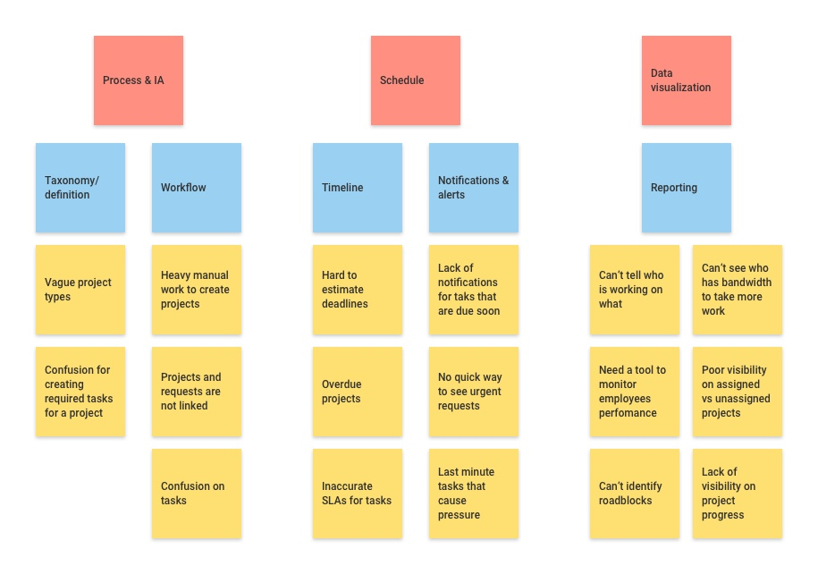
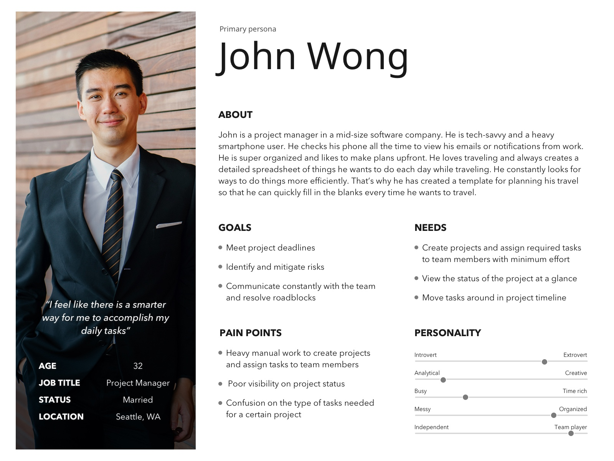
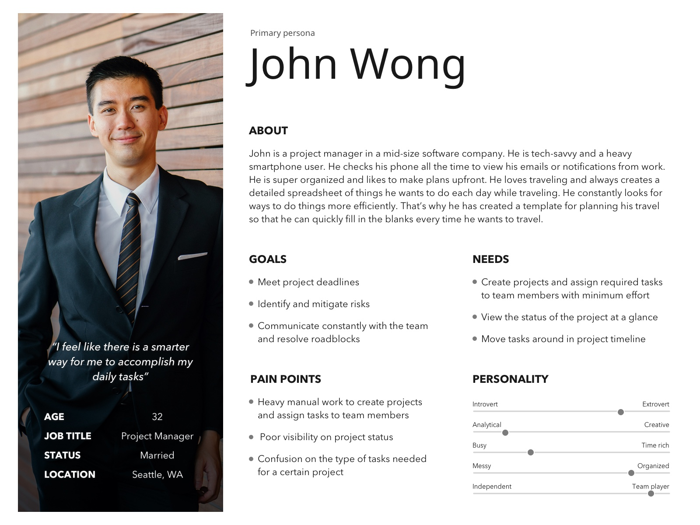
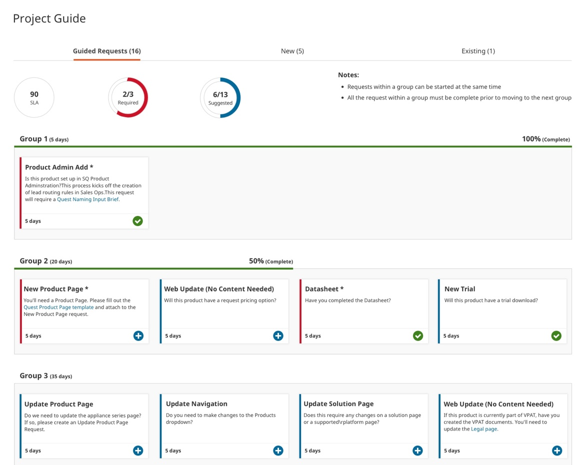
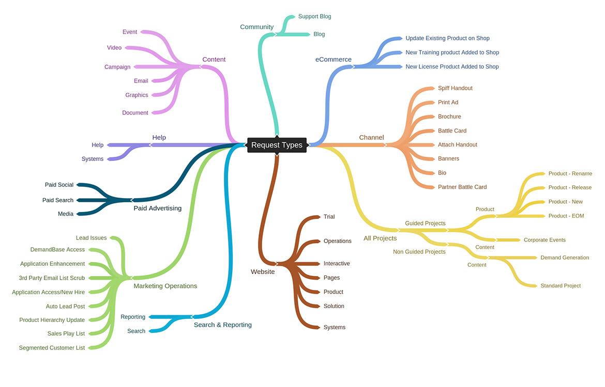
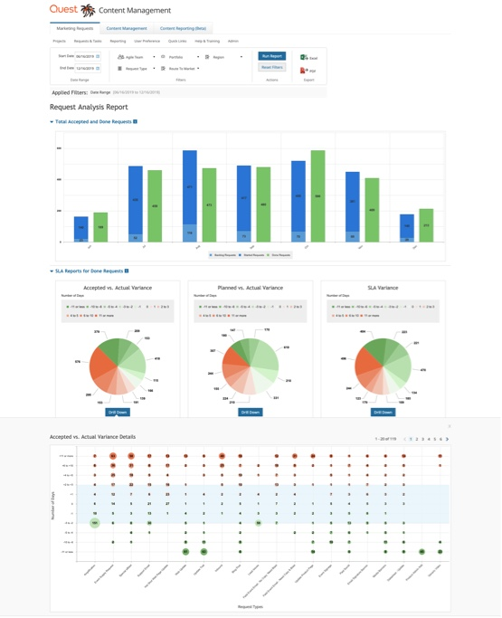
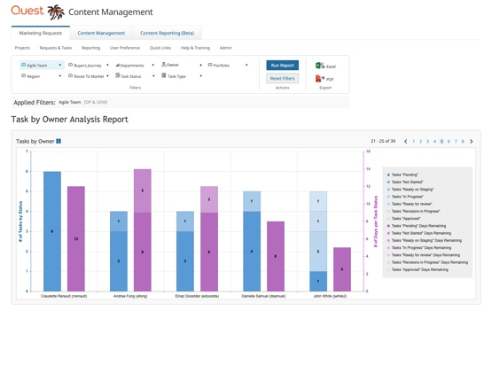
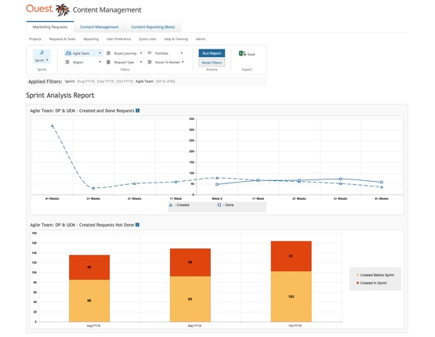

Overview
Problem
Oasis 2 (O2) is an in-house enterprise web application product for Quest.com & Oneidentity.com websites. Besides its many features, It is used to manage projects and assign requests associated with them to team members.
Poor visibility on project timeline and progress of work created an urgent need to improve the process and come up with a new feature for this product.
Solution
We designed a new feature to assist project managers to stay in control again by keeping everything related to a project in one spot. It helped to avoid confusion, last-minute requests, and escalations. Here are some of our high-level goals:
- Create an easy, visual, and intuitive project planner that everyone will embrace and use
- Data visibility enhancements by displaying project phasing, SLAs, and reporting
- Accurate timeline estimation & notifications to reduce communication friction and delay risks
My Role
Product Designer
Timeline
3 Months (2019)
Team Members
Product Designer, Product Architect, Business Analyst, Designer, stakeholders, Developers
Tools
Sketch, Frontify, Zeplin, InVision
Our Approach
1 Research
- Questionnaire
- Contextual Interviews
- Affinity Mapping
- Competitive Analysis
- Personas
- Journey Mapping
2 Design
- Design Alternatives
- Brainstorming
- User Feedback
- Mockups
- Interactive Prototype
3 Evaluate
- Usability Testing
- Final Design
- Impact & Future Directions
My Contribution
During the research phase, I worked closely with our business analyst to capture issues based on existing user behavior. I contributed to stakeholders and contextual interviews, conducted a competitive analysis and took the lead in creating an affinity mapping. Plus, I created personas to make sure we are designing for the right user group and mapped the user journey for each persona.
I moderated brainstorming sessions with our team and was responsible to synthesize and analyze data. I then designed the user interface for the project planner using Sketch and created an interactive prototype in InVision for user testing.
During the evaluation phase, I moderated usability testing sessions and was in charge of analyzing the data and deriving design recommendations accordingly. I worked with our BA to create a reporting area in the product to provide data visualization to our stakeholders and project managers using Telerik Kendo UI library chart components to create interactive prototypes.
Research
Questionnaire
I teamed up with our business analyst and project manager to understand the main issues team members having using our current product feature to manage projects and requests.
We created and sent out a short open-ended questionnaire to 10 users in our company with different roles. Our main goal was to capture the main issues of each group and craft our personas based on their needs accordingly.

User Interviews
We then conducted semi-structured interviews with these users to expand our knowledge further and define the areas we need to focus on based on their impact on the team’s daily jobs.
Here are some of the main findings based on roles:

Directors
Poor visibility on:
- the accepted body of work to analyze completed requests & tasks for SLA compliance
- Assigned vs unassigned projects to agile team members
- Number of accepted vs completed task types

Project Managers
- The vague definition of project types and requests associated with them
- Poor visibility on the progress of work which leads to inaccurate timeline estimates
- Heavy manual work to create or locate existing requests for each project
- Inaccurate SLAs
Team Members
- Lack of notifications about urgent or overdue tasks
- Last-minute requests that put pressure on the team due to poor functional team views of incoming work
- Hard to find specific tasks associated with projects
Affinity Mapping
Based on our interviews and the information we gathered, I created an affinity diagram to categorize the problems.
Competitive Analysis
I conducted a competitive analysis to gather ideas about how other products are handling similar issues based on reviewing their value proposition, customer reviews, pros, and cons of each product.
From the analysis I learned that:
- Users need to see the summary of the information they need at a glance
- The information needs to be available on all devices so that users can check and collaborate anywhere anytime
- Users should be able to easily move tasks around in the project timeline (drag and drop functionality)
- It is important to have all the information about a project in one place (dashboard concept)
- Visual indications of project status help users to quickly identify roadblocks and track project status
- Building interactive reports to analyze project outcome
Personas
After analyzing and discussing our research results, I created the following personas to help guide our solution.
 


Journey Mapping
At this stage, we decided to focus on our primary personas journey maps as the impacts of improving their experience were critical to the project's timeline. We postponed enhancements to our secondary persona’s user experience to another phase.
Design
Design Alternatives
After several brainstorming sessions with the team, we decided to build a new feature for our product. We called it a project/request planner initially. We came up with a couple of concepts referring back to our user’s needs to make sure we address their pain points.
I designed interfaces for these concepts using Sketch. Due to time constraints, I skipped creating wireframes. Mockups for “Request Types” pop-up are created by my colleague Diana. We tried to use the same style guide we have for this product in our new design to maintain consistency.
We broke down projects into two categories:
- Guided projects: The idea is to provide the steps and requests needed to create these type of projects to guide the project managers create them with minimal effort
- Non-guided projects: This is for projects that involve only a few requests
Concept 1
We broke requests to 4 tabs; required, suggested, new, or optional tasks to the project. The goal is to have interview sessions with each business unit to find out the types of requests required for each type of project and automatically load them into the page. That way the chances of missing a task will be reduced for project managers.

We included tooltips to explain what each project type involves and help to clarify different types of projects for project managers persona.
Once the user picks a project type, they will be taken to this page where they see 4 tabs to add required, suggested, new, or optional tasks to the project.
Click on each of these requests will open a pop-up to create the request. Once the request created it will be added to the project and the + icon will turn to a checkmark to indicate that the request has been added successfully.

The “New” tab will be there in case any additional requests needed during the execution of the project. Eventually, we want to remove this tab as we learn how things work overtime and refine suggested/required tabs accordingly.

Users can find and include any existing requests for a new project through this section which will eliminate the pain of manually creating or finding requests for project managers.
Concept 2
The idea here is to bake SLAs into requests for a better time estimate. I added a percentage progress bar along with some circle progress charts to display where we are in the creation of the project.
Reporting Dashboard Concept
We’ve conducted interview sessions with stakeholders to capture the data they are interested to see. Based on our sessions, we identified 4 different report types.

I've added a description for each report to provide a better context and address one of the pain points of our director persona journey map where they didn't know which report provides what. I then started to create interactive prototypes using Telerik Kendo UI components to create charts.
At this point, I wanted to validate the datasets of the reports with directors and stakeholders before we proceed further with this feature.
Brainstorming
Parallel to designing the user interface for the new project planner, we conducted a brainstorming session with our users to understand the best way to categorize requests and project types in the “Request Type” pop-up to help project managers pick the right project type upfront.
I took the lead to organize and analyze the result:
Diana created the final pop-up mockup for request/project types based on our card sorting session result.
User Feedback
We presented our ideas to the project managers and stakeholders of the product. We walked users through our concepts and explained the flow. At this stage, our goal was to validate our concepts and make sure we were on the right track.
After presenting each concept, we asked the users how effective they think this feature would be. We also ask them what are the functionalities that they like and dislike.
Here is a summary of the feedback we collected:
Concept 1
Pros
Loading requests based on project is great because it helps to have a default template to start working with
Users liked the description for each request type since it will help them think deeper to see if a specific request needed for the project they are managing
Adding existing requests to the projects was yet another thing that can eliminate the manual work of creating them
They also liked the plus and checkmark icons to quickly see what has been created and what’s not
Cons
They didn’t like the tabs. They mentioned tabs will force them to go back and forth to remember what they did in other sections
This concept still doesn’t help them to see the progress of the project at a glance
It also misses SLAs which needs to be there to help calculate the project timeline
Concept 2
Pros
They liked the clean view of cards as they can scan the whole view easier.
They liked the progress circles at the top which gave them a quick summary of the SLA and requests
Cons
They found different lines in the layout confusing
The overall progress of the project is missing
They were concerned about the order in which the group tasks need to start. There might be some scenarios where two groups should work in parallel.
Reporting Dashboard Concept
Users really liked the idea of having a reporting dashboard linked with the new project planner and the request queue data. The next step was for our BA to gather requirements for the charts and me coming up with what would be the best chart type to visualize data using Kendo components.
Mockups & Interactive Prototype
From the information we gathered during our review sessions with our users, we decided to go ahead with the second concept for the project planner and further refine the design based on what we learned. Following are the next round of mockups that are ordered by the experience flow:
Once users pick a request type under guided projects they will be taken to this page where all the required and suggested requests are laid out into different phases. I got rid of the tabs and incorporated new and existing requests into a single view to reduce cognitive load based user feedback.
Each phase will have an estimated SLA. Requests can be moved around using drag and drop functionality to not only provide more flexibility to project managers but also build one of the core features of competitor products. Project time will be re-calculated automatically if any status changes happens.
I included progress circle charts that will show important data about the progress of the project and removed the progress lines to give it a less line heavy look.

Our user starts the journey by clicking on the “Add Request” button in the request queue.
A pop-up with different request types categorized based on the brainstorming session we had with the team opens for user selection
Once they pick a request type under guided projects they will be taken to this page where all the required and suggested requests are laid out into different phases.

Once the user clicks on a “+” button a pop-up opens to create the request.
Once the request created it will be added to the card with a link to access the details and the icon will turn into a checkmark for instant feedback. An attachment icon will indicate that the card is associated with a request and can be unlinked in case the wrong request has been created or attached.
Under each phase, I added a button to enable either adding a new or existing request to a phase to address one of the user's pain points to go back and forth to see different requests in a project through tabs.
If the user clicks on add new option then the familiar request type pop-up appears to select a request type.

If the user chooses to include an existing request, then the pop-up for finding the request will display.
The pop-up will let the user find and add an exiting request easily.

Request & task manager section to display all the requests in one view. I added the ability to filter based on the criteria our secondary persona stated to see the requests that are due or have alerts because of being delayed. The project also includes the commenting ability and sending an email notification about status changes.
If the user wants to unlink a custom request (not a required nor a suggested request) from a card, a confirmation tooltip will appear.

If the user chooses to unlink request then the card will disappear from the phase.

If the user chooses to unlink a request from a required card, then the card will remain and the request will be unlinked.

Once a request unlinked from a required request, the checkmark icon turns back to a plus sign to signify that the request needs to be recreated.
If the user chooses to create a non-guided project then an empty template of the new design will appear, giving the user full flexibility to add cards. I designed this view as a fall-back solution for migrating existing projects to our new tool or to explore building new project types in the future.
This part was one of the most challenging phases of this project since I had to leverage requirements for each report with technical limitations of different chart types.
I worked alongside developers, and conducted daily test sessions with stakeholders to ensure each report is intuitive and provides the data breakdown per users needs.
Request Analysis Report
Task Analysis Report

Task by Owner Analysis Report
Created and Done Requests by Agile teams Report
Interactive Prototype
I also created an interactive prototype of this new product feature using InVision.
To better show the drag and drop functionality I worked with developers to implement the functionality using code to communicate the experience easier when showing it to the users:

I designed a micro interaction to communicate that a request has been created successfully.
I defined the transitions for breaking down high level data to more detailed view using proper chart types:
Evaluate
Usability Testing
We presented the prototype to the users and conducted test sessions with 3 users, using following taks:
Task 1: Create a guided project for a new product
Task 2: Find and add a new trial request to the project
Task 3: Add a new trial request to phase one
Task 4: Add an existing request to phase one
Task 5: Unlink the request from the "product admin add" card
Task 6: Filter request table based on the requests that are due this week
Key Takeaways
- Show status of the request at card level
- Provide functionality to adjust the request start date
- Filters to adjust card view based on needs
- Confusion about project taxonomy
- Too many requests to create a project
Final Design
At this point, we faced another technical challenge for implementing filters for the planner. Adding filters to the planner would add 2 more weeks to the project's timeline.
As a workaround, I tried to differentiate the cards visually based on their status and also created a table view of the same information to reuse existing filter functionality in our product. That way we avoided project delay.
Project Taxonomy & Onboarding
We created a project taxonomy and conducted several training sessions for the team to introduce this newly added feature to our product.

Impact & Future Directions
To measure the result of our work, we defined a set of metrics for evaluation such as:
- Churn rate
- Number of guided vs non-guided projects created
- Percentage of required/suggested tasks that are created
- Number of canceled projects (expecting to decrease with the new taxonomy of request type)
- Time spent on creating projects
- Number of delayed projects
Although we launched this product feature 3 months back and it is still too early to evaluate its full impact but we noticed that project managers are saving an average of 15% of their time when creating a project using guided projects. Plus:
- 65% of the required requests are being created
- Only 10% of the suggested requests are being used
- 37% of requests are custom
Based on the data and the feedback from our users, we came up with a list of changes that we can apply to the product to enhance this feature further:
Use a timer concept to track time spent on a particular task to improve SLA estimates
Work closely with business units to remove unnecessary requests
Ability to filter cards similar to the request/task table
Add micro-interactions to the checkmark icon to indicate the user completed the task successfully and encourage them to continue
Optimize request creation forms to have fewer fields to accelerate the process
Send notification email daily for urgent or overdue tasks to engage users even more
Make the platform responsive to let the users access an overview of their tasks on the go
Reward team members based on the timely projects and requests they have completed